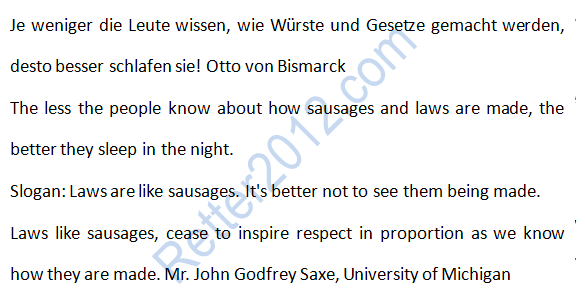

返回主页
名言佳句（长句）

A statesman cannot create anything himself. He must wait and listen until he hears the steps of God sounding through events; then leap up and grasp the hem of his garment.
Man cannot control the current of events. he can only float with them and steer.
When you want to fool the world, tell the truth.
Never believe anything in politics until it has been officially denied.
Otto von Bismarck
希特勒演讲：但泽（Danzig）回归祖国。Maniac！！
日耳曼人大迁徙（蛮族入侵）
德国地图
普鲁士（Prussia）地图
Hegel说“We learn from history that we do not learn from history”。
爱（Was du liebst, lass frei）
一生中只追求完美
McNerney：Help others get better. 政工/政委/Vujicic
I start with people's growth, my own growth included. Help others get better, that is, help people who work for you grow. If team works, everything will be fine.
My ability to lead (leiten/Leiter), to chart the course for the team members, to inspire them to reach for performance, to deliver the values you bring to the job. We focus on the courage to do the right thing. I tend to think about this in terms of helping others get better. I view myself as a value-added facilitator（促进者/帮助着）here more than as someone who's crashing through the waves on the bridge of a frigate护卫舰. It feels great to see the people you work with grow and achieve.
It generally gets down to a very personal level - openness to change, courage to change, hard work and teamwork. What I do is figure out how to unlock that in people, because most people have that inside them. But they often get trapped in, for example, fear, bureaucracy or confusion.
You chart the course for yourself and the people you work with, to expect a lot and inspire people, to have the right values, to find a way and deliver results - these are pretty fundamental things. The things you expect of people have to be so fundamental. Like a priest missionary (the seminary, The Communication Department （传理系/“仁”即“沟通”/仁者无敌） of Hong Kong Baptist University). I expect a fair amount from people. It makes them so much better.
There was no question that there was an expectation in my family, for every member, including my children. I think some of the saddest things in the world are when you don't expect enough from your children. They have to run a higher standard. Yes, it will be a little over focused, a little tough, but that's part of the package or side effects (副作用).
As a child, you're trying to grow and meet expectations. If you focus and insist, you will win at least once. Success and achievement can feed on themselves. It feels good to keep succeeding. It’s positive feedback. Then you have the passion to win. Like addiction or maniac （上瘾/狂热）.
Expect a lot, inspire people, ask them to take the values that are important to them at home or at church and bring them to work.
爱（Was du liebst, lass frei）
version:1.0; jobnet@188.com © retter2012.com